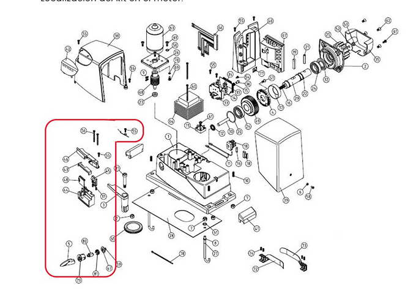

Nice ROAD — despiece original

Para facilitar el trabajo, los puntos representan los principales kits comercializados; cada uno puede incluir varias referencias numeradas del dibujo.
Motor corredizo de cremallera · ROAD 200 / 300 / 400

Para facilitar el trabajo, los puntos representan los principales kits comercializados; cada uno puede incluir varias referencias numeradas del dibujo.